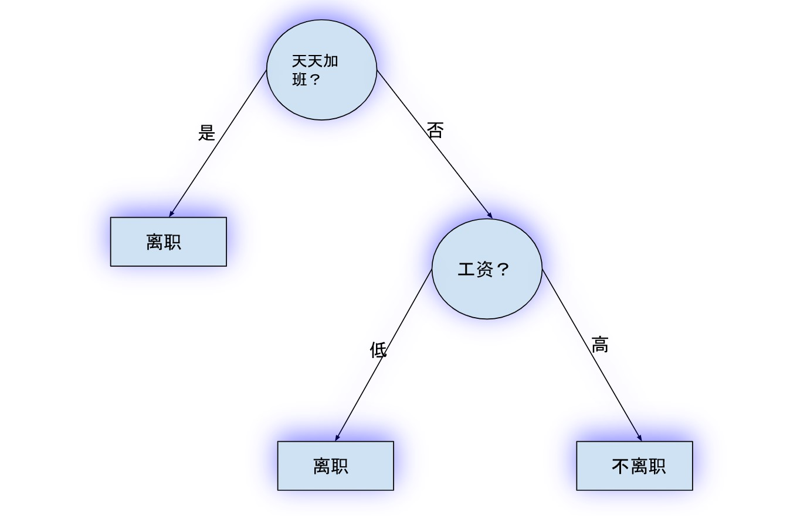
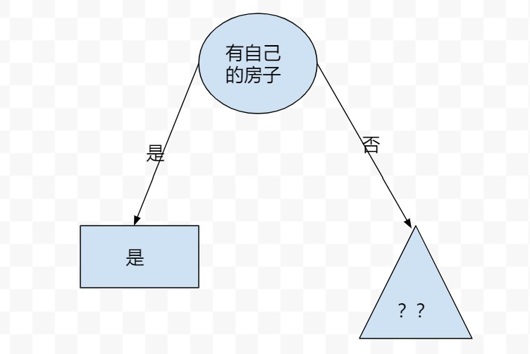
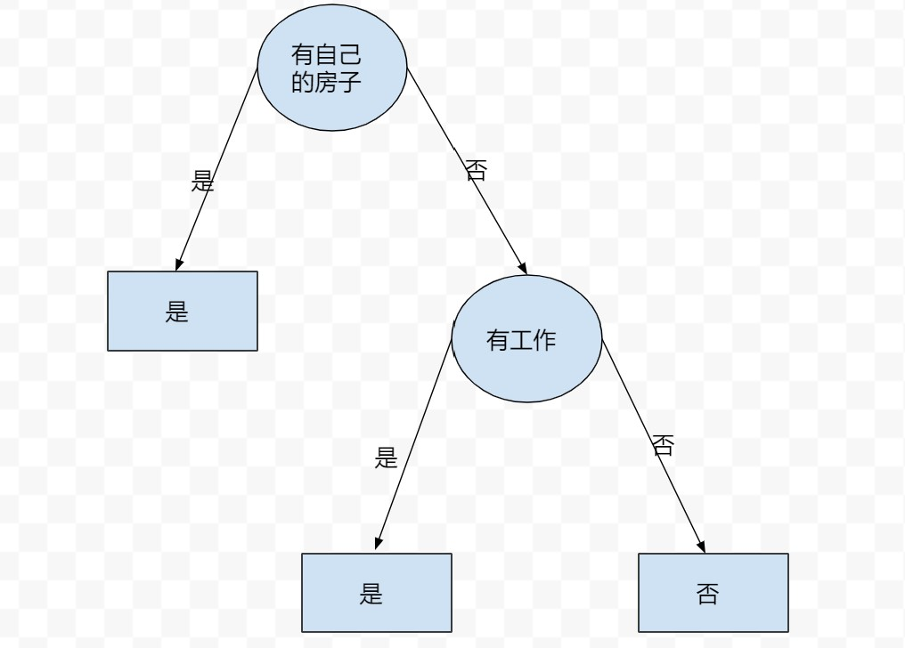
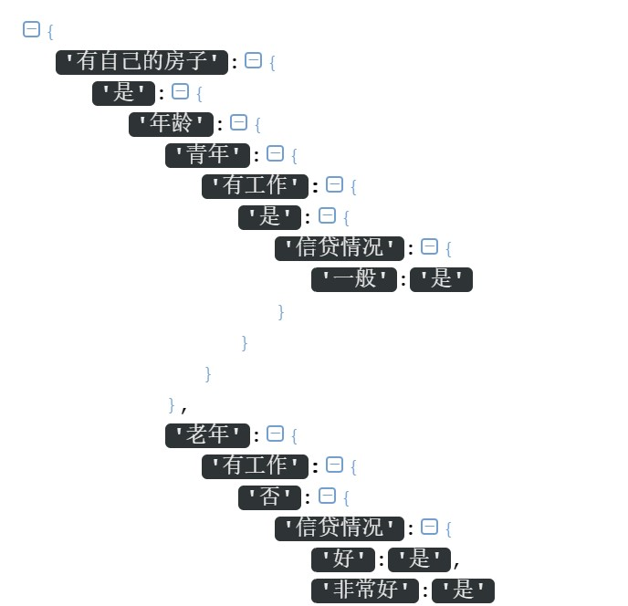
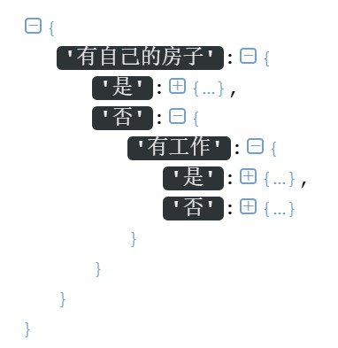

开篇
决策树，可以看做一个if-else规则的集合，比如下图就是一棵决策树：

其中，圆圈代表特征，矩形代表最终的类别，圆圈和矩形都可以称为树的节点，决策树正是由这样一个个节点组成的。
本文的主要内容是从零开始构建一棵决策树，中间过程会涉及诸如熵，信息增益以及决策树等概念。
按照老规矩，先上栗子。
信贷决策问题
这里有一份数据集，其中每个ID代表一个人，类别列代表是否同意这个人的贷款申请，中间列（年龄，有工作，有自己的房子，信贷情况）是4个特征，现在要求你利用这四个特征及类别标签，构建一棵决策树来决定是否同意贷款申请人的贷款申请。
| ID| 年龄| 有工作 | 有自己的房子| 信贷情况 |类别|
| ——– | —–: | :—-: |:—–:|:—–:|:—–:|
| 1 | 青年 | 否 |否|一般|否
|2 | 青年 | 否 |否|好|否
| 3 | 青年 | 是 |否|好|是|
| 4 | 青年 | 是 |是|一般|是
| 5 | 青年 | 否 |否|一般|否
| 6 | 中年 | 否 |否|一般|否
| 7 | 中年 | 否 |否|好|否
| 8 | 中年 | 是 |是|好|是
| 9 | 中年 | 否 |是|非常好|是
| 10 | 中年 | 否 |是|非常好|是
| 11 | 老年 | 否 |是|非常好|是
| 12 | 老年 | 否 |是|好|是
| 13 | 老年 | 是 |否|好|是
| 14 | 老年 | 是 |否|非常好|是
| 15 | 老年 | 否 |否|一般|否
这里先给出解决问题的思路：
选择当前划分下合适的特征，根据特征的不同取值对训练数据集做划分，得到训练数据集的若干子集，从而使树分叉，直到特征用尽或者在当前划分下的全部样本都是同一类。递归执行以上步骤即可。
由此看来，构建决策树的过程其实就是不断选择合适特征的过程。
那哪一个是合适的特征呢？
熵和条件熵
首先来介绍熵的概念。
熵定义为信息的期望，可以用来度量不确定性。
熵值越大，代表不确定性越高；熵值越小，代表不确定性越低。
熵的计算公式为：
$$H=-\sum_{i=1}^{n}P(X=x_i)logP(X=x_i)$$
公式说明：
n代表X所有不同取值的个数；
log的底数一般取2或e，这里我们统一取2;
规定当$P(X=x_i)=0$时，$P(X=x_i)logP(X=x_i)=0$
举个例子：对于明天的天气预测这件事情，A同学和B同学各自给出了自己的预测：
| . | 阴 | 晴 | 雨 | 雪 |
| ——– | —–: | :—-: |
| A | 0.9 | 0.1 | 0 | 0 |
| B | 0.6 | 0.2 | 0.1 | 0.1 |
分别计算A和B的熵值：
$$H_A=-(0.9log0.9+0.1log0.1+0+0)=0.4689$$
$$H_B=-(0.6log0.6+0.2log0.2+0.1log0.1+0.1log0.1)=1.5709$$
B预测结果的熵比A的大，说明B的预测结果的不确定性比A大，所以如果非要在A和B的预测结果中选择一个的话，我们应该选择A的预测结果，因为它的熵小一些，从而不确定性小一些。
用Python实现上述计算熵的过程：
1 | import numpy as np |
输出结果和我们手动计算的是一样的：
1 | A:0.4689955935892812 |
了解了熵之后，再来看一下什么是条件熵。
条件熵$H(Y|X)$表示在已知$X$的情况下$Y$的不确定性：
$$H(Y|X)=\sum_{i=1}^{n}P(X=x_i)H(Y|X=x_i)$$
当熵和条件熵中的概率是由数据估计得到时，所对应的熵分别被称为经验熵和经验条件熵
信息增益定义为经验熵与经验条件熵的差值。
信息增益衡量了在加入条件后，不确定性的减少程度。减少的程度越大，说明该条件的加入使得不确定性变得越小，这正是我们在决策树进行特征选择时所希望的。具体来说，当某个特征作为条件被加入考虑后，我们对于预测结果的不确定性变小了，也就是对预测结果更有把握了，那么该特征就更有可能作为“合适的特征”用来划分数据集。
特征选择
在做特征选择时，我们会首先对训练数据集（或者其子集）计算经验熵，然后计算每个特征的经验条件熵，最后根据以上计算结果得到每个特征的信息增益，信息增益最大的特征就是我们要选择的最合适的特征。
现在， 来看一下上面的信贷申请栗子中，第一次做划分时应该选择哪个特征。
用D表示训练数据集。
首先计算经验熵H(D)：
类别列共两类，是：9；否：6
$$H(D)=-(\frac{9}{15}log\frac{9}{15}+\frac{6}{15}log\frac{6}{15})=0.971$$
接下来分别计算4个特征对数据集D的信息增益：
(1) 计算“年龄”对数据集D的信息增益：
根据年龄的不同取值，可以将D划分为3个子集：
D1青年：5人；D2中年：5人；D3老年：5人
在D1中，类别为“是”：2；类别为“否”：3
在D2中，类别为“是”：3；类别为“否”：2
在D3中，类别为“是”：4；类别为“否”：1
于是，年龄对数据集D的信息增益为：
$$H(D)-[\frac{5}{15}H(D_1)+\frac{5}{15}H(D_2)+\frac{5}{15}H(D_3)]$$
其中，
$$H(D)=0.971$$
$$H(D_1)=-(\frac{2}{5}log\frac{2}{5}+\frac{3}{5}log\frac{3}{5})$$
$$H(D_2)=-(\frac{3}{5}log\frac{3}{5}+\frac{2}{5}log\frac{2}{5})$$
$$H(D_3)=-(\frac{1}{5}log\frac{1}{5}+\frac{4}{5}log\frac{4}{5})$$
最终计算得到“年龄”对数据集D的信息增益为0.083
(2) 计算“有工作”对数据集D的信息增益：
根据有工作的不同取值，可以将D划分为2个子集：
D1是（有工作）：5人；D2否（无工作）：10人
在D1中，类别为“是”：5；类别为“否”：0
在D2中，类别为“是”：4；类别为“否”：6
于是，“有工作”对数据集D的信息增益为：
$$H(D)-[\frac{5}{15}H(D_1)+\frac{10}{15}H(D_2]$$
其中，
$$H(D)=0.971$$
$$H(D_1)=-(\frac{5}{5}log\frac{5}{5}+\frac{0}{5}log\frac{0}{5})=0$$
$$H(D_2)=-(\frac{4}{10}log\frac{4}{10}+\frac{6}{10}log\frac{6}{10})$$
最终计算得到“有工作”对数据集D的信息增益为0.324
(3)同理，可计算得到“有自己的房子”对数据集D的信息增益为0.420
(4)同理，可计算得到“信贷情况”对数据集D的信息增益为0.363
由于“有自己的房子”的信息增益最大，因此选择该特征作为最合适的特征。
现在来用Python实现上述特征选择的过程。
先读取信贷申请的数据集（公众号后台回复“dt”可获取）
1 | dataset = pd.read_csv('mydata.csv',encoding='gb18030') |
输出：
1 | 年龄 有工作 有自己的房子 信贷情况 类别 |
(1)计算经验熵：
因此这里需要重写计算熵的函数。之前预测天气的栗子中实现的熵的计算函数是cal_ent，当时传入的是处理好的预测向量（$P(X=x_i)$已知）。然而，在贷款申请的栗子中，我们需要传入pandas的数据集，此时$P(X=x_i)$未知，因此需要根据全部样本的类别标签计算$P(X=x_i)$，代码如下：
1 | def cal_ent(dataset): |
可以使用贷款申请栗子中的数据测试下：
1 | print(cal_ent(dataset)) |
输出为0.9709505944546686，和我们上面手算的一样。
(2)计算信息增益的方法基于(1)中熵的计算：
1 | #计算信息增益 |
其中，ent是数据集的熵，可以直接由(1)计算得到，con_ent是条件熵，它虽然也是基于(1)的，但是还有一些额外的计算要实现，继续往下看吧。
(3)获取每个特征所有不同取值：
1 | #获取每个特征的所有不同取值 |
用贷款申请的栗子测试下：
1 | dataset=pd.read_csv('mydata.csv',encoding='gb18030') |
输出
1 | [{'青年', '老年', '中年'}, {'是', '否'}, {'是', '否'}, {'非常好', '好', '一般'}] |
嗯，已经提取出来了每个特征的所有取值。
(4)实现按照特征的不同取值划分数据集的函数：
1 | #对于数据集dataset的第fea_index个特征，将该特征取值为value对应的样本提取出来作为划分后的子集 |
假设选择了“年龄”作为划分特征，且要得到“年龄”中全部为“青年”的子集，测试如下：
1 | dataset = pd.read_csv('mydata.csv',encoding='gb18030') |
输出：
1 | 0 1 2 3 |
注意输出的子集不含有之前用作划分的特征。
(5)现在，可以选择最佳特征了：
1 | #选择用于划分子集的最佳特征（信息增益最大的特征） |
让我们来模拟一下之前的贷款申请中手动计算得到第一个最佳划分特征的过程：
1 | print(choose_best_feature(dataset)) |
输出：
1 | 信息增益分别为： [0.08300749985576883, 0.32365019815155627, 0.4199730940219749, 0.36298956253708536] |
信息增益和我们之前手动计算的是一样的，最佳特征的索引也是一样的：索引是2，也就是第3个特征，回看我们的数据集，第三个特征是”有自己的房子”。完全一致。
生成决策树
既然明确了特征选择的方法，接下来就可以生成决策树了。
决策树的生成步骤如下：
对于训练数据集D，输出生成的决策树T：
(1)如果D中所有样本都是同一个类别，那么无需额外步骤，T是一棵单结点树，返回T（此时不管特征取值如何，决策树总是会将每一个样本归到同一类别）；
(2)如果数据集没有特征可用，此时T也是一棵单结点树，并且将D中大多数样本所属类别作为最终全部样本的类别，返回T；
(3)如果以上两点都不满足，就计算各特征对D的信息增益，选择信息增益最大的特征$A_g$；
(4) 如果$A_g$的信息增益小于事先设置的阈值，那么对不起，和(2)一样，T仍为单结点树，并且将D中大多数样本所属类别作为最终全部样本的类别，返回T；
(5) 如果以上三点（（1），（2），（4））都不满足，那么就根据信息增益最大的特征$A_g$的不同取值，构建若干子结点，由这些子结点将D划分为若干非空子集，由结点与子结点构成T，返回T；
对于每个子结点，在对应的子集上使用去掉$A_g$后剩余的特征递归地调用上面的步骤即可。
现在来构建贷款申请数据集的决策树。
开始时，特征集合为：{年龄，有工作，有自己的房子，信贷情况}
我们已经知道了“有自己的房子”这个特征的信息增益最大，因此将该特征作为决策树的根节点特征，它将训练集D划分为D1(有自己的房子)和D2（没有自己的房子）：
D1：
| ID| 年龄| 有工作 | 信贷情况 |类别|
| ——– | —–: | :—-: |:—–:|:—–:|:—–:|
| 4 | 青年 | 是 |一般|是
| 8 | 中年 | 是 |好|是
| 9 | 中年 | 否 |非常好|是
| 10 | 中年 | 否 |非常好|是
| 11 | 老年 | 否 |非常好|是
| 12 | 老年 | 否 |好|是
D2：
| ID| 年龄| 有工作 | 信贷情况 |类别|
| ——– | —–: | :—-: |:—–:|:—–:|:—–:|
| 1 | 青年 | 否 |一般|否
|2 | 青年 | 否 |好|否
| 3 | 青年 | 是 |好|是|
| 5 | 青年 | 否 |一般|否
| 6 | 中年 | 否 |一般|否
| 7 | 中年 | 否 |好|否
| 13 | 老年 | 是 |好|是
| 14 | 老年 | 是 |非常好|是
| 15 | 老年 | 否 |一般|否
由于D1中所有人的类别标签都是“是”，因此它成为一个叶子节点，此时决策树的大致结构如下：

然后将“有自己的房子”这个特征从全部特征中剔除，此时特征集合为：{年龄，有工作，信贷情况}
由于在D2中，类别标签既有“是”也有“否”，因此需要在D2中重复执行之前的步骤(现在D2就相当于之前的D了)：
计算经验熵$H(D_2)$，经验条件熵$H(D_2|年龄)$，经验条件熵$H(D_2|有工作)$，经验条件熵$H(D_2|信贷情况)$，得到剩余的特征{年龄，有工作，信贷情况}对D2的信息增益分别为{0.251，0.918，0.474}，因为0.918最大，因此选择“有工作”这个特征作为当前最适合的特征。
“有工作”这个特征可以将D2划分为两部分，不妨称之为D21（有工作）和D22（没有工作）：
D21:
| ID| 年龄 | 信贷情况 |类别|
| ——– | —–: | :—-: |:—–:|:—–:|:—–:|
| 3 | 青年 |好|是|
| 13 | 老年 |好|是
| 14 | 老年 |非常好|是
D22:
| ID| 年龄 | 信贷情况 |类别|
| ——– | —–: | :—-: |:—–:|:—–:|:—–:|
| 1 | 青年 |一般|否
|2 | 青年 |好|否
| 5 | 青年 |一般|否
| 6 | 中年 |一般|否
| 7 | 中年 |好|否
| 15 | 老年 |一般|否
经过这次的特征选择，划分后得到的两个子集中全部样本都是同一个类别（D21中，全部样本的类别标签都是“是”，D22中，全部样本的类别标签都是“否”），这样一棵决策树就生成了：

现在用Python来实现构造树的过程：
1 | def create_tree(dataset,features): |
用贷款申请数据集来构造一棵决策树吧：
1 | dataset = pd.read_csv('mydata.csv',encoding='gb18030') |
输出的决策树是用字典保存的：
1 | {'有自己的房子': {'是': {'年龄': {'老年': {'有工作': {'否': {'信贷情况': {'非常好': '是', '好': '是'}}}}, '中年': {'有工作': {'否': {'信贷情况': {'非常好': '是'}}, '是': {'信贷情况': {'好': '是'}}}}, '青年': {'有工作': {'是': {'信贷情况': {'一般': '是'}}}}}}, '否': {'有工作': {'是': {'年龄': {'老年': {'信贷情况': {'非常好': '是', '好': '是'}}, '青年': {'信贷情况': {'好': '是'}}}}, '否': {'年龄': {'老年': {'信贷情况': {'一般': '否'}}, '中年': {'信贷情况': {'好': '否', '一般': '否'}}, '青年': {'信贷情况': {'好': '否', '一般': '否'}}}}}}}} |
真令人眼花！
不过我们可以使用在线的json格式化工具https://www.sojson.com/simple_json.html来看一下它的结构：

分叉可真多！
手动将一些分叉做折叠，可以得到和我们之前手推结果一致的决策树结构：

这说明我们的决策树从大方向上来说是对的。
但是，生成的决策树中貌似有很多小的分叉，而这些分叉在手推时是不存在的。
为什么会这样呢？
其实原因很简单，我们的代码忽略了在本节最开始归纳的决策树构建步骤中的第(4)条：如果$A_g$的信息增益小于事先设置的阈值，T仍为单结点树，并且将D中大多数样本所属类别作为最终全部样本的类别，返回T；
这一点也可以从打印每次划分的信息增益看出来：
1 | 信息增益分别为： [0.08300749985576883, 0.32365019815155627, 0.4199730940219749, 0.36298956253708536] |
信息增益已经为0了，却仍在分叉，这便是这棵决策树”枝叶繁茂””的原因！
所以需要设置一个阈值，这里不妨将阈值设置为一个全局变量thresh=0.05.
同时，choose_best_feature函数不仅要返回信息增益最大的特征索引，还要返回信息增益的值，以便与阈值进行比较。
choose_best_feature函数修改后如下：
1 | def choose_best_feature(dataset): |
创建树的函数修改如下(修改部分已标注)：
1 | def create_tree(dataset,features): |
再次调用上面的函数：
1 | thresh=0.05#信息增益的阈值 |
输出如下的决策树：
1 | {'有自己的房子': {'是': '是', '否': {'有工作': {'是': '是', '否': '否'}}}} |
丢进上面的网站格式化一下，出来如下结果：
这次就和我们手推的结果完全一样啦~
以上便是从零开始构建一棵决策树的全部流程。
现将全部代码汇总如下：
1 | import numpy as np |
写在后面
除去以上所讲内容，其实还有许许多多本文未讲到的关于决策树的知识，在这里仅罗列其中几点：我们上面实现的决策树的构建算法叫做ID3算法（基于信息增益）。除了该算法以外，还有C4.5算法（基于信息增益比），CART算法（基于基尼指数）等；为了防止决策树过于复杂而出现过拟合现象，有应对的剪枝策略，我们设置信息增益阈值的措施属于预剪枝策略（一边生成树一边剪枝），还有未曾介绍的后剪枝策略（待整个树生成完再做剪枝）。
总结来说，本文围绕贷款申请问题，依次介绍了熵，条件熵，信息增益，最佳划分特征选取的准则，并使用ID3算法从零开始构建了一棵贷款申请结果预测的决策树。
又到了求在看的时间了，嘿嘿~


- 本文链接：http://yoursite.com/2021/01/31/%E5%86%B3%E7%AD%96%E6%A0%91/
- 版权声明：本博客所有文章除特别声明外，均默认采用 许可协议。